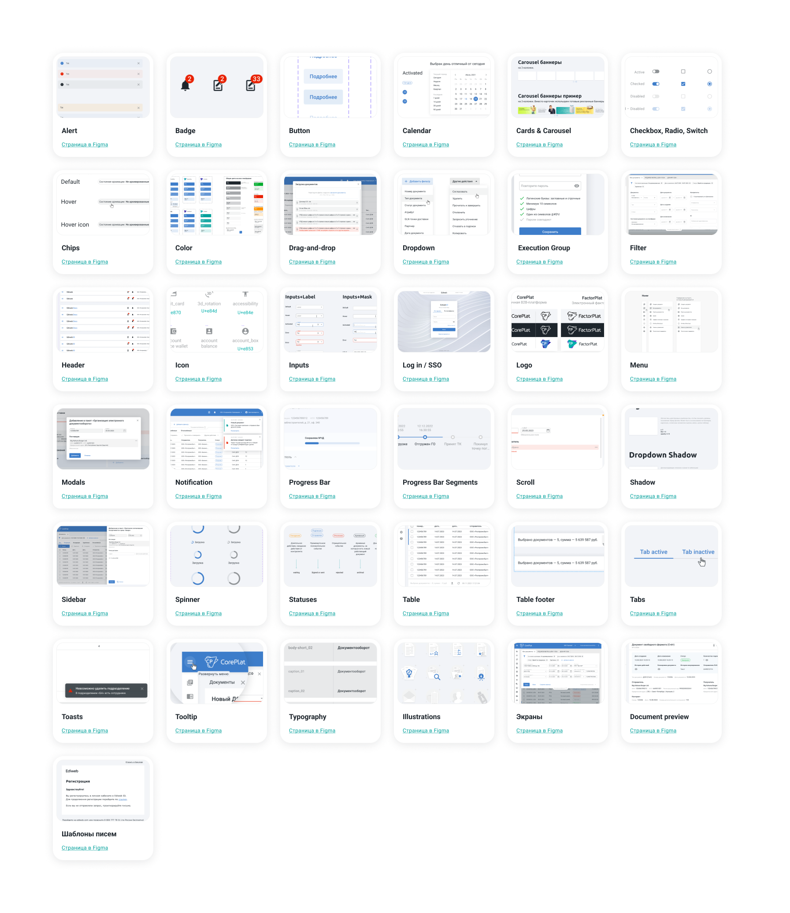
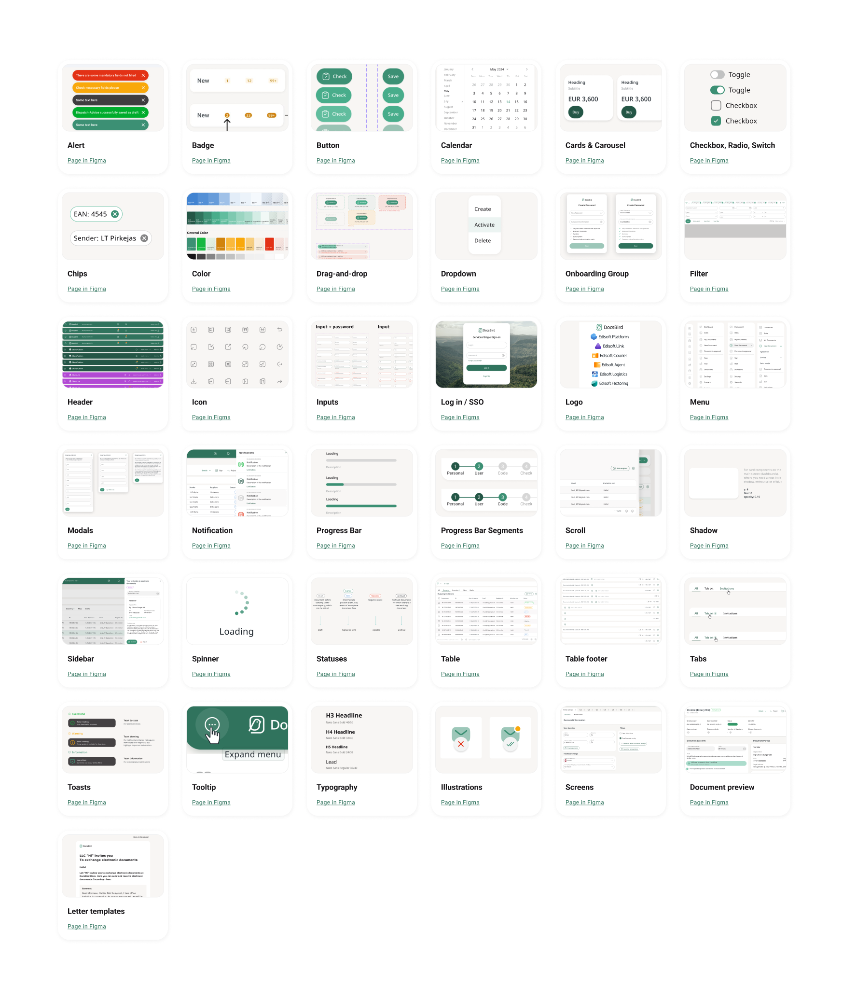

01 · Новый UI-kit
Собрать сотни компонентов в новый UI-kit
На атомарной структуре исходной библиотеки создала оформление, состояния и правила применения сотен компонентов DocsBird.
- Визуальный язык. Зелёная палитра, скруглённые формы, новый иконсет, хедер и отдельный логотип.
- Применение. Библиотека стала основой обновлённых сценариев и новых экранов.
Правила композиции: одна или две карточки в строке, высота по содержимому. В широкой карточке — два столбца полей, в половинной — один. В инвойсинге карточки объединяют данные документа, участников, договора, оплаты и заказа.

